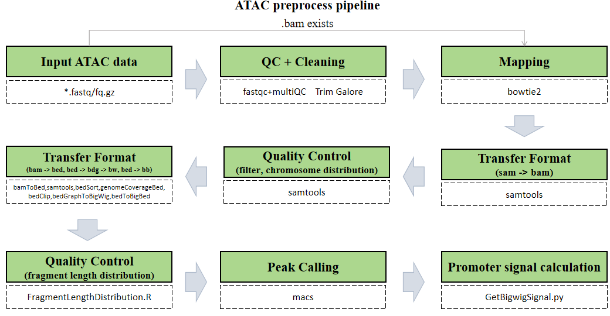

Our CDesk ATAC module comprises of 7 function submodules. Here we present you the CDesk ATAC working pipeline and how to use it to analyze your ATAC data.
The CDesk ATAC preprocess pipeline is illustrated in the figure below. The input consists of a directory containing compressed FASTQ files in either paired-end format (xxx_1.fastq.gz/xxx_1.fq.gz and xxx_2.fastq.gz/xxx_2.fq.gz) or single-end format (xxx.fastq.gz/xxx.fq.gz).
The pipeline first checks whether a BAM file corresponding to each FASTQ sequencing file already exists. If so, the alignment step is skipped to save time. Next, each FASTQ file undergoes optional quality control using FastQC and MultiQC to assess key metrics such as base quality distribution, GC content, and adapter contamination. Following quality assessment, Trim Galore is applied to trim low-quality bases and remove adapter sequences, ensuring high accuracy in downstream analyses. Subsequently, Bowtie2 is used to align the cleaned reads to the reference genome, determining the genomic origin of each fragment. The resulting SAM files are then converted into sorted and indexed BAM files using Samtools. After format conversion, reads are filtered to remove low-quality and unaligned reads, followed by further format conversion to generate BED, BigWig, and BigBed files. Fragment length distribution is then analyzed and visualized. Peak calling is performed using MACS, and finally, signal intensity over promoter regions is computed for downstream interpretation.

Here is an example about how to use the CDesk ATAC preprocess module.
CDesk ATAC preprocess \
-i /.../input_directory -o /.../output_directory \
-t 50 -s mm10 (--group /.../group.csv)
| Parameters(*necessary) | Description | Default value |
|---|---|---|
| -i,--input* | The input directory | |
| -o,--output* | The output directory | |
| -s,--species* | The species specified | |
| -t,--thread | The number of threads to use | 8 |
| -l | 1:Single sequencing, 2:Pair sequencing | 2 |
| --group | The grouping file if you need to merge the replicates or rename files |
If the pipeline runs successfully, you will see output similar to the figure shown below.
Checking required tools... All required tools are available. --------------------------------------------INITIALIZING---------------------------------------------- ATAC-seq data analysis pipeline is now running... Number of threads ---------- 100 Directory of data ---------- /mnt2/zhaochengchen/CDesk_TestData/ATACseq Directory of result ---------- /mnt/linzejie/CDesk_test/result/3.ATAC/1.preprocess/bam_fq1 Mapping index ---------- /mnt/zhaochengchen/Data/mm10/mm10 ChromInfo ---------- /mnt/zhaochengchen/Data/mm10/mm10.len PromoterInfo ---------- /mnt/liudong/data/Genome/mm10/mm10.promoter.ncbiRefSeq.WithUCSC.bed ---------------------------------------Process fq files----------------------------------------------------- ----------------------------------------------------------------------------------------------------- ----------------------------Number 1 fq sample: GSM7789740-------------------------- ----------------------------------------------------------------------------------------------------- No available BAM file checked，do mapping fastqc 2025-09-30 22:12:05 fastqc ... 1.mapping... paired data 2025-09-30 22:20:38 trim_galore ... paired data 2025-09-30 22:25:39 bowtie2 ... sam2bam 2025-09-30 22:35:20 samtools view ... ----------------------------------------------------------------------------------------------------- ----------------------------Number 2 fq sample: GSM7789741-------------------------- ----------------------------------------------------------------------------------------------------- No available BAM file checked，do mapping fastqc 2025-09-30 22:35:46 fastqc ... 1.mapping... paired data 2025-09-30 22:41:32 trim_galore ... paired data 2025-09-30 22:44:58 bowtie2 ... sam2bam 2025-09-30 22:48:53 samtools view ... ----------------------------------------------------------------------------------------------------- ----------------------------Number 3 fq sample: GSM7789742-------------------------- ----------------------------------------------------------------------------------------------------- No available BAM file checked，do mapping fastqc 2025-09-30 22:49:11 fastqc ... 1.mapping... paired data 2025-09-30 22:56:29 trim_galore ... paired data 2025-09-30 23:00:53 bowtie2 ... sam2bam 2025-09-30 23:06:36 samtools view ... ----------------------------------------------------------------------------------------------------- ----------------------------Number 4 fq sample: GSM7789743-------------------------- ----------------------------------------------------------------------------------------------------- No available BAM file checked，do mapping fastqc 2025-09-30 23:07:01 fastqc ... 1.mapping... paired data 2025-09-30 23:14:04 trim_galore ... paired data 2025-09-30 23:17:41 bowtie2 ... sam2bam 2025-09-30 23:22:06 samtools view ... ---------------------------------------Process bam file---------------------------------------------------- bam2sortbam 2025-10-01 03:37:47 samtools sort ... Sort BAM... [bam_sort_core] merging from 0 files and 100 in-memory blocks... BAM index... bam2sortbam 2025-10-01 03:39:45 samtools sort ... Sort BAM... [bam_sort_core] merging from 0 files and 100 in-memory blocks... BAM index... bam2sortbam 2025-10-01 03:41:12 samtools sort ... Sort BAM... [bam_sort_core] merging from 0 files and 100 in-memory blocks... BAM index... bam2sortbam 2025-10-01 03:43:07 samtools sort ... Sort BAM... [bam_sort_core] merging from 0 files and 100 in-memory blocks... BAM index... Merge replicates... ----------------------------Number 1 bam sample: ESC-------------------------- paired data 2025-10-01 04:22:58 chromosome distribution ... paired data 2025-10-01 04:28:55 filtering ... 2.generating BigWig... paired data 2025-10-01 04:33:29 BigWig ... [bam_sort_core] merging from 2 files and 20 in-memory blocks... generate bigbed 2025-10-01 04:51:56 bedToBigBed ... pass1 - making usageList (21 chroms): 4999 millis pass2 - checking and writing primary data (45156775 records, 3 fields): 31299 millis 3.peak calling... 4.Promoter signal calculation... Skip 3 transcripts Results saved to /mnt/linzejie/CDesk_test/result/3.ATAC/1.preprocess/bam_fq1/Signal/ESC.PromoterSignal.csv ----------------------------Number 2 bam sample: MEF-------------------------- paired data 2025-10-01 05:06:32 chromosome distribution ... paired data 2025-10-01 05:09:00 filtering ... 2.generating BigWig... paired data 2025-10-01 05:10:35 BigWig ... [bam_sort_core] merging from 0 files and 20 in-memory blocks... generate bigbed 2025-10-01 05:16:08 bedToBigBed ... pass1 - making usageList (21 chroms): 1242 millis pass2 - checking and writing primary data (12748107 records, 3 fields): 9088 millis 3.peak calling... 4.Promoter signal calculation... Skip 3 transcripts Results saved to /mnt/linzejie/CDesk_test/result/3.ATAC/1.preprocess/bam_fq1/Signal/MEF.PromoterSignal.csv ATACseq preprocessing has been finished!!!
sample,group GSM7789740,MEF GSM7789741,MEF GSM7789742,ESC GSM7789743,ESC 2 columns: - sample: The prefix of generated bam files (x.bam, the prefix of input fq files: x_1.fastq.gz/x_1.fq.gz,x_2.fastq.gz/x_2.fq.gz,x.fastq.gz/x.fq.gz) - group: The bam files of the same group would be merged
The CDesk ATAC QC module performs correlation analysis on ATAC-seq data across different samples to visualize sample relationships. The genome is binned by chromosome at a user-defined bin size. When a peak region file is provided, these regions are merged. Signal similarity across samples is calculated within these regions. PCA and correlation heatmaps are generated to help researchers interpret sample distribution and underlying structure in the data.
Here is an example about how to use the CDesk ATAC QC module.
CDesk ATAC QC \
-i /.../input.csv -o /.../output_directory \
--bin 100000 -t 100 --species mm10
| Parameters(*necessary) | Description | Default value |
|---|---|---|
| -i,--input* | The input ATAC sample information file | |
| -o,--output* | The output directory | |
| -s,--species* | The species specified | |
| --bin | Bin size for genomic binning | 100000 |
| --step | Peak file partition step | 1 |
| -t,--thread | The number of threads to use | 30 |
| --width | The plot width | 12 |
| --height | The plot height | 8 |
If the pipeline runs successfully, there would be PCA and correlation heatmap of binned genome or merged peaks.
group,tag,bw,peak JGES,JGES_D0,/mnt/linzejie/CDesk_test/data/3.ATAC/2.QC/bw/JGES_D0.bw,/mnt/linzejie/CDesk_test/data/3.ATAC/2.QC/peak/JGES_D0_peaks.bed JGES,JGES_D1,/mnt/linzejie/CDesk_test/data/3.ATAC/2.QC/bw/JGES_D1.bw,/mnt/linzejie/CDesk_test/data/3.ATAC/2.QC/peak/JGES_D1_peaks.bed JGES,JGES_D3,/mnt/linzejie/CDesk_test/data/3.ATAC/2.QC/bw/JGES_D3.bw,/mnt/linzejie/CDesk_test/data/3.ATAC/2.QC/peak/JGES_D3_peaks.bed JGES,JGES_D5,/mnt/linzejie/CDesk_test/data/3.ATAC/2.QC/bw/JGES_D5.bw,/mnt/linzejie/CDesk_test/data/3.ATAC/2.QC/peak/JGES_D5_peaks.bed JGES,JGES_D7,/mnt/linzejie/CDesk_test/data/3.ATAC/2.QC/bw/JGES_D7.bw,/mnt/linzejie/CDesk_test/data/3.ATAC/2.QC/peak/JGES_D7_peaks.bed MEF,MEF,/mnt/linzejie/CDesk_test/data/3.ATAC/2.QC/bw/MEF.bw,/mnt/linzejie/CDesk_test/data/3.ATAC/2.QC/peak/MEF_peaks.bed JGESB,JGESB_D1,/mnt/linzejie/CDesk_test/data/3.ATAC/2.QC/bw/JGESB_D1.bw,/mnt/linzejie/CDesk_test/data/3.ATAC/2.QC/peak/JGESB_D1_peaks.bed JGESB,JGESB_D3,/mnt/linzejie/CDesk_test/data/3.ATAC/2.QC/bw/JGESB_D3.bw,/mnt/linzejie/CDesk_test/data/3.ATAC/2.QC/peak/JGESB_D3_peaks.bed JGESB,JGESB_D5,/mnt/linzejie/CDesk_test/data/3.ATAC/2.QC/bw/JGESB_D5.bw,/mnt/linzejie/CDesk_test/data/3.ATAC/2.QC/peak/JGESB_D5_peaks.bed JGESB,JGESB_D7,/mnt/linzejie/CDesk_test/data/3.ATAC/2.QC/bw/JGESB_D7.bw,/mnt/linzejie/CDesk_test/data/3.ATAC/2.QC/peak/JGESB_D7_peaks.bed ESC,ESC_r1,/mnt/linzejie/CDesk_test/data/3.ATAC/2.QC/bw/ESC_r1.bw,/mnt/linzejie/CDesk_test/data/3.ATAC/2.QC/peak/ESC_r1_peaks.bed ESC,ESC_r2,/mnt/linzejie/CDesk_test/data/3.ATAC/2.QC/bw/ESC_r2.bw,/mnt/linzejie/CDesk_test/data/3.ATAC/2.QC/peak/ESC_r2_peaks.bed ESC,ESC_r3,/mnt/linzejie/CDesk_test/data/3.ATAC/2.QC/bw/ESC_r3.bw,/mnt/linzejie/CDesk_test/data/3.ATAC/2.QC/peak/ESC_r3_peaks.bed - bw: The bw files - group: Same group would be assigned as same color in the PCA plot - tag: Assign the tag in the plots - peak(optional): The peak files to merge if peak parameter assigned
The CDesk ATAC dynamic module analyzes the dynamic changes in chromatin accessibility between two ATAC-seq datasets, identifying differentially accessible genomic regions and their associated genes over time. It calculates the signal intensity within these regions and generates heatmaps to visualize the temporal changes in chromatin accessibility.
The pipeline first retrieves sample information from the metadata file and validates the input files before merging peak regions across all samples. The merged regions are then classified into dynamic patterns, including CO (closed-to-open) and OC (open-to-closed), to identify chromatin state transitions. Signal intensities for each region across samples are calculated and normalized. Heatmaps are generated to visualize these dynamic patterns, both within individual groups and in aligned multi-group comparisons. Finally, the classified regions are annotated with associated genes and subjected to transcription factor analysis, producing comprehensive outputs including region statistics and gene associations.
Here is an example about how to use the CDesk ATAC dynamic module.
CDesk ATAC dynamic \
-i /.../input.csv -o /.../output_directory \
--species mm10 --remove_cluster CO9,OC1
| Parameters(*necessary) | Description | Default value |
|---|---|---|
| -i,--input* | The input ATAC sample information file | |
| -o,--output* | The output directory | |
| -s,--species* | The species specified | |
| --remove_cluster | The cluster to remove | '' |
| --important_index | PSpecify the group to align, 1: the latter one in meta file, 0: the former one in meta file | 0 |
If the pipeline runs successfully, there would be 6 folders and a summary file of cluster and gene in the output directory.
sample,tag_time,tag_group,bw,peak Nanog_d0,D0,Oct4Nanog,/mnt/linzejie/CDesk_test/data/3.ATAC/3.dynamic/bw/Nanog_d0.bw,/mnt/linzejie/CDesk_test/data/3.ATAC/3.dynamic/peak/Nanog_d0.e5_peaks.bed Nanog_d1,D1,Oct4Nanog,/mnt/linzejie/CDesk_test/data/3.ATAC/3.dynamic/bw/Nanog_d1.bw,/mnt/linzejie/CDesk_test/data/3.ATAC/3.dynamic/peak/Nanog_d1.e5_peaks.bed Nanog_d3,D3,Oct4Nanog,/mnt/linzejie/CDesk_test/data/3.ATAC/3.dynamic/bw/Nanog_d3.bw,/mnt/linzejie/CDesk_test/data/3.ATAC/3.dynamic/peak/Nanog_d3.e5_peaks.bed Nanog_d5,D5,Oct4Nanog,/mnt/linzejie/CDesk_test/data/3.ATAC/3.dynamic/bw/Nanog_d5.bw,/mnt/linzejie/CDesk_test/data/3.ATAC/3.dynamic/peak/Nanog_d5.e5_peaks.bed Nanog_d7,D7,Oct4Nanog,/mnt/linzejie/CDesk_test/data/3.ATAC/3.dynamic/bw/Nanog_d7.bw,/mnt/linzejie/CDesk_test/data/3.ATAC/3.dynamic/peak/Nanog_d7.e5_peaks.bed Nanog_d8,D8,Oct4Nanog,/mnt/linzejie/CDesk_test/data/3.ATAC/3.dynamic/bw/Nanog_d8.bw,/mnt/linzejie/CDesk_test/data/3.ATAC/3.dynamic/peak/Nanog_d8.e5_peaks.bed Nanog_d10,D10,Oct4Nanog,/mnt/linzejie/CDesk_test/data/3.ATAC/3.dynamic/bw/Nanog_d10.bw,/mnt/linzejie/CDesk_test/data/3.ATAC/3.dynamic/peak/Nanog_d10.e5_peaks.bed Nanog_d12,D12,Oct4Nanog,/mnt/linzejie/CDesk_test/data/3.ATAC/3.dynamic/bw/Nanog_d12.bw,/mnt/linzejie/CDesk_test/data/3.ATAC/3.dynamic/peak/Nanog_d12.e5_peaks.bed NanogN70_d0,D0,Oct4NanogN70,/mnt/linzejie/CDesk_test/data/3.ATAC/3.dynamic/bw/NanogN70_d0.bw,/mnt/linzejie/CDesk_test/data/3.ATAC/3.dynamic/peak/NanogN70_d0.e5_peaks.bed NanogN70_d1,D1,Oct4NanogN70,/mnt/linzejie/CDesk_test/data/3.ATAC/3.dynamic/bw/NanogN70_d1.bw,/mnt/linzejie/CDesk_test/data/3.ATAC/3.dynamic/peak/NanogN70_d1.e5_peaks.bed NanogN70_d3,D3,Oct4NanogN70,/mnt/linzejie/CDesk_test/data/3.ATAC/3.dynamic/bw/NanogN70_d3.bw,/mnt/linzejie/CDesk_test/data/3.ATAC/3.dynamic/peak/NanogN70_d3.e5_peaks.bed NanogN70_d5,D5,Oct4NanogN70,/mnt/linzejie/CDesk_test/data/3.ATAC/3.dynamic/bw/NanogN70_d5.bw,/mnt/linzejie/CDesk_test/data/3.ATAC/3.dynamic/peak/NanogN70_d5.e5_peaks.bed NanogN70_d7,D7,Oct4NanogN70,/mnt/linzejie/CDesk_test/data/3.ATAC/3.dynamic/bw/NanogN70_d7.bw,/mnt/linzejie/CDesk_test/data/3.ATAC/3.dynamic/peak/NanogN70_d7.e5_peaks.bed NanogN70_d8,D8,Oct4NanogN70,/mnt/linzejie/CDesk_test/data/3.ATAC/3.dynamic/bw/NanogN70_d8.bw,/mnt/linzejie/CDesk_test/data/3.ATAC/3.dynamic/peak/NanogN70_d8.e5_peaks.bed NanogN70_d10,D10,Oct4NanogN70,/mnt/linzejie/CDesk_test/data/3.ATAC/3.dynamic/bw/NanogN70_d10.bw,/mnt/linzejie/CDesk_test/data/3.ATAC/3.dynamic/peak/NanogN70_d10.e5_peaks.bed NanogN70_d12,D12,Oct4NanogN70,/mnt/linzejie/CDesk_test/data/3.ATAC/3.dynamic/bw/NanogN70_d12.bw,/mnt/linzejie/CDesk_test/data/3.ATAC/3.dynamic/peak/NanogN70_d12.e5_peaks.bed MEF,Start,head,/mnt/linzejie/CDesk_test/data/3.ATAC/3.dynamic/bw/MEF.bw,/mnt/linzejie/CDesk_test/data/3.ATAC/3.dynamic/peak/MEF.e5_peaks.bed mES,End,tail,/mnt/linzejie/CDesk_test/data/3.ATAC/3.dynamic/bw/mES.bw,/mnt/linzejie/CDesk_test/data/3.ATAC/3.dynamic/peak/mES.e5_peaks.bed - sample: Sample to analyze - tag_time: The time tag ( The temporal order from top to bottom, should be consistent between the two groups.) - tag_group: The group (one or two) - bw: The corresponding bw file - peak The corresponding peak bed file
1. Get sample imformation 2. Merge the samples and get the OC/CO state 3. Get the cluster type and calculate the signal strength 4. Plot heatmap 5. Get gene information from bed files Done, you can check the results now.
CDesk motif module includes four functions for transcription factor motif enrichment analysis:
Here is an example about how to use the CDesk ATAC motif homer module.
CDesk ATAC motif homer \
-i /.../macs_result_peak.csv -o /.../output_directory \
-s mm10 --mode peak
CDesk ATAC motif homer \
-i /.../gene.txt -o /.../output_directory \
-s mouse --mode gene
| Parameters(*necessary) | Description | Default value |
|---|---|---|
| -i,--input* | The input gene/peak information file | |
| -o,--output* | The output directory | |
| -s,--species* | Available gene in HOMER or provide the path to genome FASTA files for peak mode | |
| --mode* | Analysis mode: peak/gene | |
| -t,--thread | The number of threads to use | 20 |
| --start | offset from TSS (gene mode) | -300 |
| --end | offset from TSS (gene mode) | 50 |
If the pipeline runs successfully, there would be findMotifsGenome, annotatePeaks homer results and log files in the output directory for the peak mode. There would be findMotifs homer results and log files in the output directory for the gene mode.
=== macs_result_peak.csv === peak,sample /mnt/linzejie/CDesk_test/data/3.ATAC/4.motif/Find_homer/GSM7789740_e3_peaks.bed,GSM7789740_e3 /mnt/linzejie/CDesk_test/data/3.ATAC/4.motif/Find_homer/GSM7789740_e5_peaks.bed,GSM7789740_e5 /mnt/linzejie/CDesk_test/data/3.ATAC/4.motif/Find_homer/GSM7789740_e7_peaks.bed,GSM7789740_e7 === gene.csv === gene,sample /mnt/kongtianci/MET/Figure/Supplement/EMT_State_cip_down_genes.txt,EMT_State_cip_down /mnt/kongtianci/MET/Figure/Supplement/EMT_State_cip_up_genes.txt,EMT_State_cip_up - sample: The generated output directory name - peak/gene: The macs call peak results / the genes txt file
Here is an example about how to use the CDesk ATAC motif meme module.
CDesk ATAC motif meme \
-i /.../input.csv -o /.../output_directory \
-db /.../db.txt
| Parameters(*necessary) | Description | Default value |
|---|---|---|
| -i,--input* | The input fasta information file | |
| -o,--output* | The output directory | |
| -db,--database* | Database file | |
| -t,--thread | The number of threads to use | 10 |
| --nmotifs | Number of motifs to extract | 3 |
If the pipeline runs successfully, there would be meme results and log files in the output directory.
=== input.csv === fasta,sample /mnt/linzejie/CDesk_test/data/3.ATAC/4.motif/Find_meme/GSM7789740_e3_peaks.fa,GSM7789740_e3 /mnt/linzejie/CDesk_test/data/3.ATAC/4.motif/Find_meme/GSM7789740_e5_peaks.fa,GSM7789740_e5 /mnt/linzejie/CDesk_test/data/3.ATAC/4.motif/Find_meme/GSM7789740_e7_peaks.fa,GSM7789740_e7 - fasta: The fasta files - sample: The sample name=== db.txt === /mnt/kongtianci/CDesk/ACATseq/meme_ref/motif_databases/JASPAR/JASPAR2022_CORE_vertebrates_non-redundant.meme /mnt/kongtianci/CDesk/ACATseq/meme_ref/motif_databases/MOUSE/HOCOMOCOv11_full_MOUSE_mono_meme_format.meme
Here is an example about how to use the CDesk ATAC motif homer_heatmap module.
CDesk ATAC motif homer_heatmap \
-i /.../input.csv -o /.../output_directory \
--motif /.../motifs.txt
| Parameters(*necessary) | Description | Default value |
|---|---|---|
| -i,--input* | The homer results information csv file | |
| -o,--output* | The output directory | |
| --motif | The specified motifs txt file | no |
| --width | The plot width | 10 |
| --height | The plot height | 8 |
If the pipeline runs successfully, there would a heatmap plot in the output directory. If no motifs specified, it would plot the top 20 significant motifs. (*: q < 0.05, **: q < 0.01, ***: q < 0.001)
=== input.csv === dir,sample,cluster /mnt/linzejie/CDesk_test/data/3.ATAC/4.motif/homer_heatmap/homer_results_test/GSM7789741_e3_peaks_motifDir,GSM7789741,e3 /mnt/linzejie/CDesk_test/data/3.ATAC/4.motif/homer_heatmap/homer_results_test/GSM7789740_e5_peaks_motifDir,GSM7789740,e5 /mnt/linzejie/CDesk_test/data/3.ATAC/4.motif/homer_heatmap/homer_results_test/GSM7789740_e3_peaks_motifDir,GSM7789740,e3 /mnt/linzejie/CDesk_test/data/3.ATAC/4.motif/homer_heatmap/homer_results_test/GSM7789740_e7_peaks_motifDir,GSM7789740,e7 - dir: homer result directory - sample: The sample name=== motifs.txt === p53 p63 NFY
Here is an example about how to use the CDesk ATAC enrich_heatmap module.
CDesk ATAC motif enrich_heatmap \
--motif /.../motifs.csv --bed /.../input.csv\
-o /.../output_directory -t 50 -s mm10
| Parameters(*necessary) | Description | Default value |
|---|---|---|
| --motif_bed* | The homer results information csv file | |
| --bed* | The output directory | |
| -o,--output* | The output directory | |
| -s,--species | The specified species | |
| -t,--thread | The number of threads | 12 |
If the pipeline runs successfully, there would a base directory that saves the input bed files, a MotifAll directory that saves the motif bed files with the statistical enrichment testing result comparing the input and motifs, a summary result file of statistical enrichment testing and the visualization dot plot.
== bed.csv == tag,bed,group OC9,/mnt/linzejie/CDesk_test/data/3.ATAC/4.motif/enrich_heatmap/bed/Oct4NanogN70_OC9.bed,OC OC8,/mnt/linzejie/CDesk_test/data/3.ATAC/4.motif/enrich_heatmap/bed/Oct4NanogN70_OC8.bed,OC OC7,/mnt/linzejie/CDesk_test/data/3.ATAC/4.motif/enrich_heatmap/bed/Oct4NanogN70_OC7.bed,OC OC6,/mnt/linzejie/CDesk_test/data/3.ATAC/4.motif/enrich_heatmap/bed/Oct4NanogN70_OC6.bed,OC OC5,/mnt/linzejie/CDesk_test/data/3.ATAC/4.motif/enrich_heatmap/bed/Oct4NanogN70_OC5.bed,OC OC4,/mnt/linzejie/CDesk_test/data/3.ATAC/4.motif/enrich_heatmap/bed/Oct4NanogN70_OC4.bed,OC OC3,/mnt/linzejie/CDesk_test/data/3.ATAC/4.motif/enrich_heatmap/bed/Oct4NanogN70_OC3.bed,OC OC2,/mnt/linzejie/CDesk_test/data/3.ATAC/4.motif/enrich_heatmap/bed/Oct4NanogN70_OC2.bed,OC OC1,/mnt/linzejie/CDesk_test/data/3.ATAC/4.motif/enrich_heatmap/bed/Oct4NanogN70_OC1.bed,OC CO9,/mnt/linzejie/CDesk_test/data/3.ATAC/4.motif/enrich_heatmap/bed/Oct4NanogN70_CO9.bed,CO CO8,/mnt/linzejie/CDesk_test/data/3.ATAC/4.motif/enrich_heatmap/bed/Oct4NanogN70_CO8.bed,CO CO7,/mnt/linzejie/CDesk_test/data/3.ATAC/4.motif/enrich_heatmap/bed/Oct4NanogN70_CO7.bed,CO CO6,/mnt/linzejie/CDesk_test/data/3.ATAC/4.motif/enrich_heatmap/bed/Oct4NanogN70_CO6.bed,CO CO5,/mnt/linzejie/CDesk_test/data/3.ATAC/4.motif/enrich_heatmap/bed/Oct4NanogN70_CO5.bed,CO CO4,/mnt/linzejie/CDesk_test/data/3.ATAC/4.motif/enrich_heatmap/bed/Oct4NanogN70_CO4.bed,CO CO3,/mnt/linzejie/CDesk_test/data/3.ATAC/4.motif/enrich_heatmap/bed/Oct4NanogN70_CO3.bed,CO CO2,/mnt/linzejie/CDesk_test/data/3.ATAC/4.motif/enrich_heatmap/bed/Oct4NanogN70_CO2.bed,CO CO1,/mnt/linzejie/CDesk_test/data/3.ATAC/4.motif/enrich_heatmap/bed/Oct4NanogN70_CO1.bed,CO - tag: The tag to plot - bed: The input bed files - group: The group to separate plots== motif.csv == motif,bed Bach1,/mnt/linzejie/CDesk_test/data/3.ATAC/4.motif/enrich_heatmap/motif/Bach1.bed Bach2,/mnt/linzejie/CDesk_test/data/3.ATAC/4.motif/enrich_heatmap/motif/Bach2.bed Sox2,/mnt/linzejie/CDesk_test/data/3.ATAC/4.motif/enrich_heatmap/motif/Sox2.bed Nanog,/mnt/linzejie/CDesk_test/data/3.ATAC/4.motif/enrich_heatmap/motif/Nanog.bed Oct4,/mnt/linzejie/CDesk_test/data/3.ATAC/4.motif/enrich_heatmap/motif/Oct4.bed Fra2,/mnt/linzejie/CDesk_test/data/3.ATAC/4.motif/enrich_heatmap/motif/Fra2.bed - motif: The motifs tag to plot - bed: The input motif bed files
The CDesk ATAC accessbility module is designed to extract signal values from BigWig files and generate average signal profile plots and boxplots. The script supports two analysis modes: region mode and gene mode. In gene mode, species information is required to retrieve gene annotations (GTF file), and the promoter region size can be user-defined. The script computes signal intensity based on user-specified alignment anchors (e.g., TSS, TTS, or peak center), generates average signal profiles, and calculates mean signal values for each region in each sample. Finally, boxplots are generated according to the user’s choice of grouping method—either by sample or by region list—enabling flexible visualization of chromatin accessibility patterns.
Here is an example about how to use the CDesk ATAC accessbility module.
CDesk ATAC accessbility \
--bw /.../bw.txt -o /.../output_directory \
-i /.../gene_list.txt \
--mode gene --species mm10 --center whole(TSS/TTS) \
(--method region_list --region_list /.../region_list.txt)
CDesk ATAC accessbility \
--bw /.../bw.txt -o /.../output_directory \
-i /.../regions.bed \
--mode region --center position(peak) \
(--method region_list --region_list /.../region_list.txt)
| Parameters(*necessary) | Description | Default value |
|---|---|---|
| --bw* | The input bw txt file | |
| -o,--output* | The output directory | |
| --mode* | Analysis mode: region/gene | |
| -i,--input* | The Input gene region or gene list txt file | |
| -s,--species | The species specified (necessarry in gene mode) | |
| --center* | Average profile alignment：region mode:peak/position，gene mode:TSS/TTS/whole | |
| --method | Boxplot plotting method：sample/region_list | sample |
| --promoter_size | Gene promoter region size, default: TSS upstream and downstream 5kb | 5000 |
| --region_list | Region list file for box plot |
If the pipeline runs successfully, there would a box plot, a summary file of signals on different regions, a directory that saves the profile plot and signal matrix.
For TSS and TTS, the plot displays the region spanning ±5 kbp around the TSS, TTS, respectively.
For the whole center, the plot includes the entire gene body plus 5 kbp upstream and downstream. Since gene body lengths vary, the gene body region is scaled to a uniform length during visualization to ensure alignment across genes.
Two methods are available for generating the boxplot:
sample: computes the average signal across all genes or regions for each sample, and plots one box per sample;
region_list: groups regions based on a user-provided --region_list file and calculates average signal values for each group, generating a boxplot where each box represents a defined region set.
== bw.txt == /mnt/linzejie/CDesk_test/data/3.ATAC/5.accessbility/GSM7789744.bw /mnt/linzejie/CDesk_test/data/3.ATAC/5.accessbility/GSM7789758.bw /mnt/linzejie/CDesk_test/data/3.ATAC/5.accessbility/GSM7789757.bw /mnt/linzejie/CDesk_test/data/3.ATAC/5.accessbility/GSM7789756.bw /mnt/linzejie/CDesk_test/data/3.ATAC/5.accessbility/GSM7789755.bw /mnt/linzejie/CDesk_test/data/3.ATAC/5.accessbility/GSM7789754.bw /mnt/linzejie/CDesk_test/data/3.ATAC/5.accessbility/GSM7789753.bw /mnt/linzejie/CDesk_test/data/3.ATAC/5.accessbility/GSM7789752.bw /mnt/linzejie/CDesk_test/data/3.ATAC/5.accessbility/GSM7789751.bw /mnt/linzejie/CDesk_test/data/3.ATAC/5.accessbility/GSM7789750.bw == gene_list.txt == Sox2 Mprip Oc90 == region_list.txt ==(each line a group) chr1:3510000-3520000 chr2:16590000-16600000 chr11:18590000-18600000 chr18:5060000-5070000 == region_list.txt ==(each line a group) Sox2 Oc90 Mprip
The CDesk ATAC igv module is designed to automate the generation of genome browser screenshots using IGV (Integrative Genomics Viewer). It parses a list of input files and specified genomic regions to generate an IGV batch script. The script then runs IGV in a virtual display environment, enabling headless operation, and automatically captures screenshots of the specified genomic regions in bulk.
Here is an example about how to use the CDesk ATAC igv module.
CDesk ATAC igv \
-i /.../input.txt -o /.../output_directory \
--region /.../regions.txt --genome hg19
| Parameters(*necessary) | Description | Default value |
|---|---|---|
| -i,--input* | The input list file | |
| -o,--output* | The output directory | |
| --genome* | The genome specified | |
| --region* | Region list file | |
| --display_mode | Display mode：collapse/expand/squish | collapse |
| --type | Output plot format: svg/png | png |
If the pipeline runs successfully, there would an IGV batch script and IGV snapshots in the output directory.
Using system JDK. IGV requires Java 21. openjdk version "21.0.6" 2025-01-21 OpenJDK Runtime Environment JBR-21.0.6+9-895.97-nomod (build 21.0.6+9-b895.97) OpenJDK 64-Bit Server VM JBR-21.0.6+9-895.97-nomod (build 21.0.6+9-b895.97, mixed mode, sharing) WARNING: Unknown module: jide.common specified to --add-exports WARNING: Unknown module: jide.common specified to --add-exports WARNING: Unknown module: jide.common specified to --add-exports WARNING: Unknown module: jide.common specified to --add-exports WARNING: Unknown module: jide.common specified to --add-exports WARNING: package com.sun.java.swing.plaf.windows not in java.desktop WARNING: package sun.awt.windows not in java.desktop WARNING: Unknown module: jide.common specified to --add-exports WARNING: Unknown module: jide.common specified to --add-exports INFO [Oct 24,2025 10:59] [Main] Startup IGV Version user not_set INFO [Oct 24,2025 10:59] [Main] Java 21.0.6 (build 21.0.6+9-b895.97) 2025-01-21 INFO [Oct 24,2025 10:59] [Main] Java Vendor: JetBrains s.r.o. https://openjdk.org/ INFO [Oct 24,2025 10:59] [Main] JVM: OpenJDK 64-Bit Server VM JBR-21.0.6+9-895.97-nomod INFO [Oct 24,2025 10:59] [Main] OS: Linux 5.15.0-139-generic amd64 INFO [Oct 24,2025 10:59] [Main] IGV Directory: /mnt/linzejie/igv INFO [Oct 24,2025 10:59] [OAuthUtils] Loading Google oAuth properties INFO [Oct 24,2025 10:59] [CommandListener] Listening on port 60151 SLF4J: Failed to load class "org.slf4j.impl.StaticLoggerBinder". SLF4J: Defaulting to no-operation (NOP) logger implementation SLF4J: See http://www.slf4j.org/codes.html#StaticLoggerBinder for further details. INFO [Oct 24,2025 10:59] [BatchRunner] Executing batch script: /mnt/linzejie/CDesk_test/data/3.ATAC/6.igv/igv_batch_script.txt INFO [Oct 24,2025 10:59] [GenomeManager] Loading genome: https://raw.githubusercontent.com/igvteam/igv-genomes/refs/heads/main/json/hg38.json SEVERE [Oct 24,2025 11:00] [ReferenceFrame] Null chromosome: INFO [Oct 24,2025 11:00] [TrackLoader] Loading resource: https://hgdownload.soe.ucsc.edu/goldenPath/hg38/database/ncbiRefSeqSelect.txt.gz INFO [Oct 24,2025 11:01] [TrackLoader] Loading resource: https://hgdownload.soe.ucsc.edu/goldenPath/hg38/database/ncbiRefSeqSelect.txt.gz INFO [Oct 24,2025 11:03] [GenomeManager] Loading genome: https://raw.githubusercontent.com/igvteam/igv-data/refs/heads/main/genomes/legacy/json/hg19.json INFO [Oct 24,2025 11:03] [TrackLoader] Loading resource: https://hgdownload.soe.ucsc.edu/goldenPath/hg19/database/ncbiRefSeq.txt.gz INFO [Oct 24,2025 11:05] [TrackLoader] Loading resource: /mnt/linzejie/CDesk_test/data/3.ATAC/6.igv/test_alignments.bam WARNING: BAM index file /mnt/linzejie/CDesk_test/data/3.ATAC/6.igv/test_alignments.bam.bai is older than BAM /mnt/linzejie/CDesk_test/data/3.ATAC/6.igv/test_alignments.bam WARNING: BAM index file /mnt/linzejie/CDesk_test/data/3.ATAC/6.igv/test_alignments.bam.bai is older than BAM /mnt/linzejie/CDesk_test/data/3.ATAC/6.igv/test_alignments.bam WARNING: BAM index file /mnt/linzejie/CDesk_test/data/3.ATAC/6.igv/test_alignments.bam.bai is older than BAM /mnt/linzejie/CDesk_test/data/3.ATAC/6.igv/test_alignments.bam INFO [Oct 24,2025 11:05] [TrackLoader] Loading resource: /mnt/linzejie/CDesk_test/data/3.ATAC/6.igv/test_alignments2.bam Snapshot generation completed successfully.
== input.txt == /mnt/linzejie/CDesk_test/data/3.ATAC/6.igv/test_alignments.bam /mnt/linzejie/CDesk_test/data/3.ATAC/6.igv/test_alignments2.bam == region.txt == chr1:713500-714900 chr3:82500-84000
The CDesk ATAC correlation module analyzes the similarity between 2 ATAC-seq samples by computing the genome-wide coverage correlation of two bigWig files using the multiBigwigSummary tool. It supports two modes: genome-wide binning or user-defined region-based analysis. The module calculates both Spearman and Pearson correlation coefficients, filters out regions with zero signal, and generates scatter plots for visual inspection of the correlations.
Here is an example about how to use the CDesk ATAC correlation module.
CDesk ATAC correlation \
--bw1 /.../sample1.bw --bw2 /.../sample2.bw \
-o /.../output_directory --region /.../region.bed
| Parameters(*necessary) | Description | Default value |
|---|---|---|
| --bw1* | The first bw file | |
| --bw2* | The second bw file | |
| -o,--output* | The output directory | |
| -t,--thread | Numer of threads | 30 |
| --region | Optional BED file for specific regions |
If the pipeline runs successfully, there would be multiBigwigSummary result files and scatter plots in the output directory.
== input.txt == /mnt/linzejie/CDesk_test/data/3.ATAC/6.igv/test_alignments.bam /mnt/linzejie/CDesk_test/data/3.ATAC/6.igv/test_alignments2.bam == region.txt == chr1:713500-714900 chr3:82500-84000